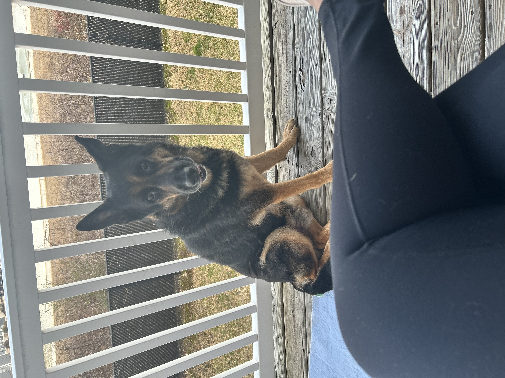

Who is Epiphany Miracle?
PARAPGRAH ABOUT EPIPHANY TAGE EARLANGER WEBSITE German Shepard Dog
Epiphany at Birth and 20 months old


How I am Growing
PARAGRAPH ABOUT PIFFY MILESTONES TAG CDC MILESTONES Emotional Support Animal